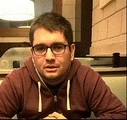

Nuestra Historia
Desde nuestra fundación, hemos buscado ser un referente en la formación musical de alta calidad...
Nuestros Profesores

Federico Nuñez
Director de Cuerdas
Especialista en instrumentos de cuerda con más de 10 años de trayectoria internacional.

Gisele Oviedo
Profesora de Cuerdas
Especialista en canto y coros con más de 3 años de trayectoria internacional.

Mateo Nuñez
Profesor de Cuerdas
Especialista instrumentos de viento con más de 4 años de trayectoria internacional.

Iara Lucero
Profesor de Cuerdas
Especialista en instrumentos de cuerda con más de 15 años de trayectoria internacional.
Jonatan Lucero
Profesor de Cuerdas
Especialista en instrumentos de percusion con más de 8 años de trayectoria internacional.